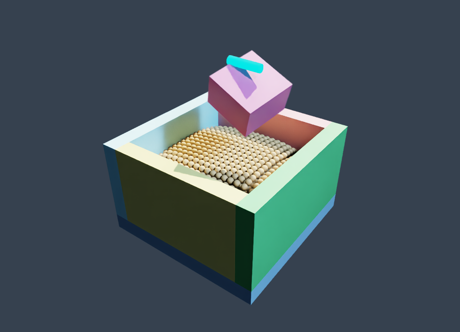
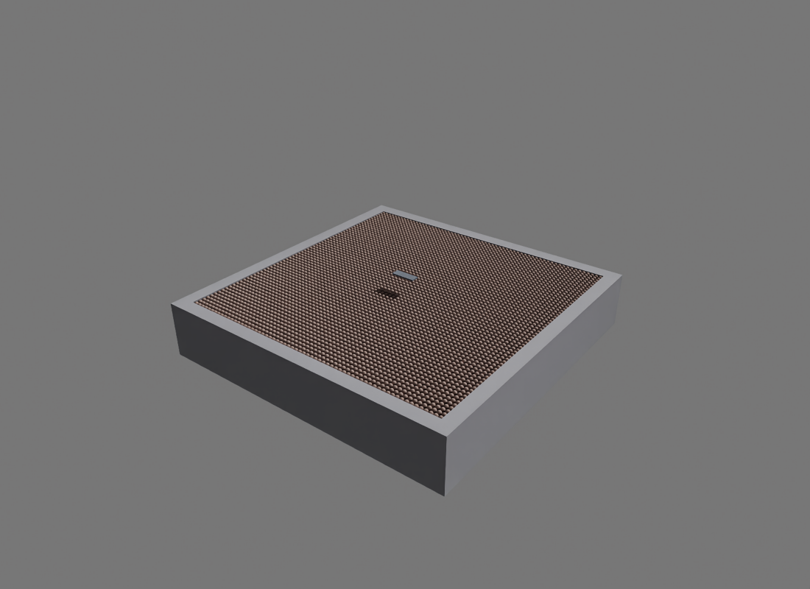

Measured October 15, 2026, on an NVIDIA RTX 5090.
cd /home/jkamohara/isaac/particle_nerd ./play.sh --viewer rtx # Optional: --shape sphere or --shape cylinder # Optional: --log /tmp/particle_play.csv
Right-click and drag the moving rigid object. Space starts or pauses; period advances one step while paused. Use the viewer's Reset button to restore both particles and the object. The simulation starts paused.

The GNN advances every material particle. The analytical estimator computes material-on-object force, and Newton MJWarp advances the rigid object. There is no MPM inference. Dragging applies a spring force and torque, rather than prescribing the object's pose. The known mouse wrench also enters the estimator's free-motion calculation.
The side panel and scalar plots distinguish material-on-object force, mouse-on-object force, and direct rigid-tray contact. CSV records applied material forces, mouse forces, and body positions. A detected divergence leaves the viewer open for inspection and reset. Arbitrary dragging is outside the passive launch training distribution.
The default now retains the recorded validation geometry and uses G1 brown/grey colors. The larger G1 scene is optional:
./play.sh --viewer rtx --scene g1-testbed --grid-size 0.04 ./play.sh --viewer rtx --scene g1-testbed --grid-size 0.02

2 × 2 × 0.3 m bed; 17 × 6 × 1 cm box; 39,690 or 296,875 particles. Material parameters and body mass remain those of the chosen validation episode. This is an OOD test without retraining. Read the selected checkpoint's exact training conditions. The timing measurements below apply to the original 4,000-particle scene.

| Object | MPM [ms] | NeRD + estimator [ms] | Relative time |
|---|---|---|---|
| Box | 10.31 | 24.54 | 2.38× slower |
| Sphere | 10.11 | 21.77 | 2.15× slower |
| Cylinder | 10.33 | 25.76 | 2.49× slower |
The box scene with a 50-iteration MPM limit takes 11.46 ms/step, compared with 10.31 ms at a 25-iteration limit. These are iteration limits; the solver can stop earlier.
Both methods evolve freely, so their later particle geometry and contact counts differ. These timings do not establish equal accuracy, large-bed performance, or optimized parallel throughput. The earlier 21.8–25.8 ms NeRD step advances only 5 ms of simulation time.
Implementation files: IsaacLab-particle-nerd/examples/particle_nerd/play.py and benchmark.py. Reproduction commands are in that directory's README. Download timing statistics, repeat means, component profiles, and software versions.
Verified: live GNN stepping in both viewers; mouse picking produces force and torque; reset restores the full simulation state; known external force is excluded from material reaction and rigid-tray force diagnostics.